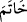
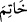

kaçar.” (Abese, 80/34-36) buyurur.
Herkesin babası olan Âdem (a.s.) öne çıkar: “Ey Allâh’ım! Sen Âdem’i affet, onun
oğullarına ne yapacağını ise sen bilirsin” der. Nuh, İbrahim, Musa, İsa ve diğer
peygamberler de (a.s.) aynı şeyi söylerler. Kıyâmetin idâresi ve korkusundan dolayı
hepsi kaçarlar, kendi başlarına kalırlar. Çocuklarıyla ilgilenemezler ve “Nefsî,
nefsî/kendim, kendim! Ey Allâh’ım, bizi kurtar da oğullarımıza ne istersen yap” derler.
Hz. Mustafa (a.s.) ise ellerini şefkat ve merhametle açmış olarak: “Ey Allâh’ım!
Benim ümmetim bir avuç zayıf ve bîçaredir. Senin azabına ve cezâna tâkat getiremezler.
Onları bağışla, merhamet et, bu Muhammed’e ise ne istersen yap!” buyurur.
O gün babaların oğullardan kaçacağı kaderde yazılmıştır. O gün, onlardan kaçmasın
ve onlara şefkat etsin diye ona (Hz. Peygamber’e) baba demezler. Ayrıca fıkıhta
babanın oğluna olan şâhidliğini kabul etmezler. Hz. Peygamber ise kıyâmette ümmetinin
adâletine şâhidlik edecektir. Bu sebepten ona baba demezler. Nitekim bu husus âyette
şöyle ifâde buyrulmaktadır: “İşte böylece sizin insanlığa şâhidler olmanız, Rasûlün
de size şâhid olması için sizi mutedil bir millet kıldık.” (el-Bakara 2/143).
“Ve peygamberlerin sonuncusudur.”
İmam Âsım “
” diye okumuştur ki mühür âleti, kendisiyle mühür yapılan şey
demektir. Yâni Muhammed (s.a.) peygamberlerin kendisiyle mühürlenip son bulduğu
zattır. Peygamberlerin mührüdür. Yâni peygamberlik kapısı onunla mühürlenmiştir,
nebîlik ve peygamberlik onunla son bulmuştur.
Diğer kırâat imamları bu kelimeyi “
” diye okumuştur. Yâni peygamberleri
mühürleyen demektir. Bu da aynı birinci mânâ gibidir. el-Müfredât’ta şöyle denilmiştir:
“Çünkü O (s.a.) peygamberliği mühürledi. Yâni gelişi ile nübüvveti tamamladı. Eğer
Hz. Peygamberimiz (s.a.)’in çağına gelmiş bir oğlu olsaydı elbette o peygamber olur ve
Peygamberimiz (s.a.) peygamberlerin sonuncusu olmazdı. Nitekim Peygamberimiz’in
(s.a.) oğlu İbrahim hakkında “Eğer yaşasaydı, elbette peygamber olurdu.”[227]
buyurduğu rivâyet edilmiştir. Çünkü Hz. Peygamber (s.a.)’den önce peygamber
çocukları babalarından nübüvvete vâris olurlardı. Bu onlara Allâh’ın bir lütfudur.
O’nun ümmetinin âlimleri de velâyet cihetinden O’nun vârisleridir. Artık Hz.
Peygamber (s.a.)’in son peygamber oluşuyla nübüvvete vâris olmak sona ermiştir.
Îsâ (a.s.)’ın Hz. Peygamber (s.a.)’den sonra nüzûlü/inmesi Peygamberimiz (s.a.)’in
peygamberlerin sonuncusu olmasına zarar vermez. Çünkü O’nun peygamberlerin
sonuncusu olmasının mânâsı, O’ndan sonra kimseye peygamberlik verilmeyecek
demektir. Nitekim Hz. Peygamber (s.a.) Hz. Ali (r.a.)’a: “Bana nisbetle sen, Mûsâ
(a.s.)’a göre Hârun gibisin. Ancak benden sonra peygamber gelmeyecektir.”[228]
buyurmuştur. Îsâ (a.s.) ise Rasûlullah (s.a.)’den önce kendisine peygamberlik
verilenlerdendir. Îsa (a.s.) yeryüzüne indiğinde ancak Hz. Muhammed (a.s.)’ın şerîatı
üzere, O’nun ümmetinden birisi gibi kıbleye yönelip namaz kılar olduğu halde inecektir.
Kendisine vahiy gelmeyecek ve yeni bir hüküm de koymayacaktır. Bilakis Rasûlullah